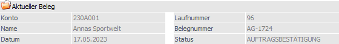
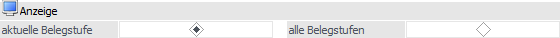
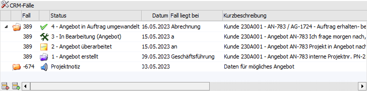
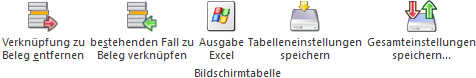

In dem Register "Beleg" werden Informationen bezüglich des aktuellen Belegs und der zugehörigen CRM-Fälle ausgewiesen. Zusätzlich können neue CRM-Fälle erfasst, bestehende verknüpft oder bestehende Verknüpfungen aufgehoben werden.

Aktueller Beleg

In dem Bereich "Aktueller Belege" werden die aten zum aktuellen Beleg (Konto, Name, Datum, Laufnummer, Belegnummer und Belegstufe) angezeigt.
Anzeige

Ø aktuelle Belegstufe / alle Belegstufen
Mit den Radiobuttons "aktuelle Belegstufe / alle Belegstufen" kann definiert werden, ob nur die CRM-Fälle des aktuellen Belegs oder die Fälle all seiner Belegstufen angezeigt werden sollen.
Beispiel
Im Angebot wurde ein CRM-Fall (Workflow) gestartet (z.B. eine Angebotsverfolgung) und in diesem Prozess das Angebot in einen Auftrag gewandelt. Zu dem Auftrag wurden anschließend weitere CRM-Fälle erfasst. Wird das Fenster "Belege - CRM-Ansicht" über das Angebot geöffnet, so wird bei der Einstellung "aktuelle Belegstufe" nur der CRM-Fall der Angebotsverfolgung angezeigt. Bei der Anzeige "alle Belegstufen" hingegen auch jene, welche über den Auftrag erfasst wurden.
Tabelle "CRM-Fälle"

In der Tabelle werden alle verknüpften CRM-Fälle mit diversen Informationen angezeigt. Per Doppleklick auf eine Zeile wird die entsprechende CRM-Fallansicht geöffnet. Zusätzlich wird bei der Anzeigeauswahl "alle Belegstufen" eine Spalte mit der Herkunft (d.h. aus welcher Belegstufe stammt der CRM-Fall) zur Verfügung gestellt.
Tabellenbuttons

Ø Verknüpfung zu Beleg entfernen
Mit Hilfe dieses Buttons wird die Verknüpfung zwischen dem markierten CRM-Fall und dem aktuellen Beleg entfernt. Der CRM-Fall an sich bleibt in diesem Fall natürlich erhalten.
Ø bestehenden Fall zu Beleg verknüpfen
Durch Anwahl dieses Buttons wird das Fenster "CRM-Suche" geöffnet, in welchem ein bestehender CRM-Fall gesucht und per Doppelklick zugeordnet / verknüpft werden kann.
Ø Ausgabe Excel
Durch Anwahl des Buttons "Ausgabe Excel" wird der Inhalt der Tabelle nach Microsoft Excel übergeben.
Ø Tabelleneinstellungen speichern
Die Spalten einer Tabelle können grundsätzlich an beliebige Positionen verschoben, bzw. in der Breite entsprechend angepasst werden. Durch Anwahl des Buttons "Tabelleneinstellungen speichern" werden die Einstellungen benutzerspezifisch gespeichert und bei dem nächsten Aufruf des Programmpunktes wieder vorgeschlagen.
Ø Gesamteinstellungen speichern
Im Gegensatz zu "Tabelleneinstellungen speichern" können mit "Gesamteinstellungen speichern" mehrere Tabellenaufbauten gespeichert und nach Wunsch geladen werden. Zusätzlich werden Sonderfunktionen der Tabelle (z.B. "Spalte gruppieren") ebenfalls bei der Speicherung bedacht.